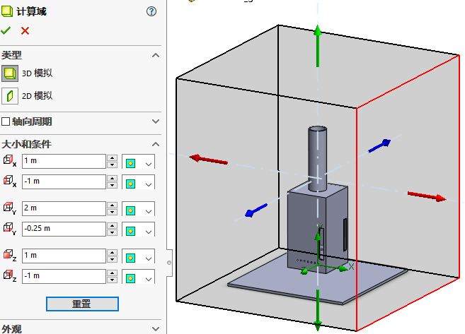

粒子轨迹
粒子轨迹研究，主要是应用在一些除尘、搅拌设备，查看粒子了设备内的混合运动情况。
案例分析
本课程是一种台风发生器。其原理是通过热对流，让热空气上升冷空气下降，通过四周不规则的开口，形成旋转气流。从而形成台风。
创建项目
利用向导创建流体分析项目

项目名称

单位系统

分析类型
默认流体类型

默认固体
壁面条件

初始条件
对这个分析来说，我们可以按默认定义进行

计算域
默认计算域过大，我们调整下大小
边界条件
热源
目标
全局目标-温度（流体）最大值
组件控制
这里为了前期定义目标，以及后期查看结果，我们这里有有给实体借用，
然后当前
计算
流动轨迹
粒子研究
向主流注入物理颗粒
新建粒子

粒子注入

使用粒子研究命令
查看粒子轨迹结果